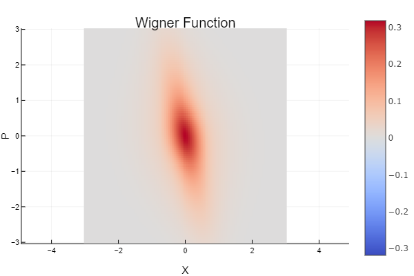

QuantumStatePlots
Documentation for QuantumStatePlots.
About
Render Wigner function
Based on the definition of Wigner function in Fock basis:
\[W_{mn}(x, p) = \frac{1}{2\pi} \int_{-\infty}^{\infty} dy \, e^{-ipy/h} \psi_m^*(x+\frac{y}{2}) \psi_n(x-\frac{y}{2})\]
Owing to the fact that the Moyal function is a generalized Wigner function. We can therefore implies that
\[W(x, p) = \sum_{m, n} \rho_{m, n} W_{m, n}(x, p)\]
Here, $\rho$ is the density matrix of the quantum state, defined as:
\[\rho = \sum_{m, n, i} \, p_i \, | n \rangle \langle n | \hat{\rho}_i | m \rangle \langle m | \hat{\rho}_i = | \psi_i \rangle \langle \psi_i | \hat{\rho}_i \, \text{is a density operator of pure state.}\]
And, $W_{m, n}(x, p)$ is the generalized Wigner function
\[W_{m, n} = \{ \begin{array}{rcl} \frac{1}{\pi} exp[-(x^2 + y^2)] (-1)^m \sqrt{2^{n-m} \frac{m!}{n!}} (x-ip)^{n-m} L_m^{n-m} (2x^2 + 2p^2), \, n \geq m \\ \frac{1}{\pi} exp[-(x^2 + y^2)] (-1)^n \sqrt{2^{m-n} \frac{n!}{m!}} (x+ip)^{m-n} L_n^{m-n} (2x^2 + 2p^2), \, n < m \\ \end{array}\]
Example
The quantum state:
\[| \psi \rangle = \hat{D}(\alpha) \hat{S}(\xi) | 1 \rangle\]
with, $\alpha = 5 \times exp(-i \frac{3\pi}{4})$ and $\xi = 0.6 \times exp(-i \pi)$
using QuantumStateBase
using QuantumStatePlots
state = displace!(squeeze!(SinglePhotonState(), ξ(0.6, 1π)), α(5., 3π/2))
wf = WignerFunction(-10:0.1:10, -10:0.1:10)
plot_wigner(wf(state), Heatmap) # Wigner function in `Heatmap` representation
plot_all(wf(state), state) # summery plotResult
- Wigner function in
Heatmaprepresentation

- Summery plot

Reference
Index
QuantumStatePlots.ContourQuantumStatePlots.HeatmapQuantumStatePlots.SurfaceQuantumStatePlots.plot_allQuantumStatePlots.plot_wignerQuantumStatePlots.plot_wignerQuantumStatePlots.plot_wignerQuantumStatePlots.plot_ρ
APIs
QuantumStatePlots.Contour — TypeContour <: PlotMethodContour representation for Wigner function of quantum state.
QuantumStatePlots.Heatmap — TypeHeatmap <: PlotMethodHeatmap representation for Wigner function of quantum state.
QuantumStatePlots.Surface — TypeSurface <: PlotMethodSurface representation for Wigner function of quantum state.
QuantumStatePlots.plot_all — Methodplot_all(
ws::WignerSurface, state::AbstractState;
state_n::Integer=0, size=(1100, 900), file_path=nothing
)Plot Wifner function and density matrux of given quantum state in both Surface and Contour representation.
state_n=n: truncate tonth photon number
Examples
julia> using QuantumStateBase
julia> state = CoherentState(α(5., π/4));
julia> wf = WignerFunction(-10:0.1:10, -10:0.1:10);
julia> plot_all(wf(state), state)QuantumStatePlots.plot_wigner — Methodplot_wigner(ws::WignerSurface, Contour; size=(1100, 900), file_path=nothing)Plot Wigner function of given quantum state in Contour representation.
Examples
julia> using QuantumStateBase
julia> state = CoherentState(α(5., π/4));
julia> wf = WignerFunction(-10:0.1:10, -10:0.1:10);
julia> plot_wigner(wf(state), Contour)QuantumStatePlots.plot_wigner — Methodplot_wigner(ws::WignerSurface, Heatmap; size=(1100, 900), file_path=nothing)Plot Wigner function of given quantum state in Heatmap representation.
Examples
julia> using QuantumStateBase
julia> state = CoherentState(α(5., π/4));
julia> wf = WignerFunction(-10:0.1:10, -10:0.1:10);
julia> plot_wigner(wf(state), Surface)QuantumStatePlots.plot_wigner — Methodplot_wigner(ws::WignerSurface, Surface; size=(1100, 900), file_path=nothing)Plot Wigner function of given quantum state in Surface representation.
Examples
julia> using QuantumStateBase
julia> state = CoherentState(α(5., π/4));
julia> wf = WignerFunction(-10:0.1:10, -10:0.1:10);
julia> plot_wigner(wf(state), Surface)QuantumStatePlots.plot_ρ — Methodplot_ρ(state::AbstractState; state_n::Integer=0, size=(1100, 900), file_path=nothing)Plot density matrux of given quantum state.
state_n=n: truncate tonth photon number
Examples
julia> using QuantumStateBase
julia> state = CoherentState(α(5., π/4));
julia> plot_ρ(state)